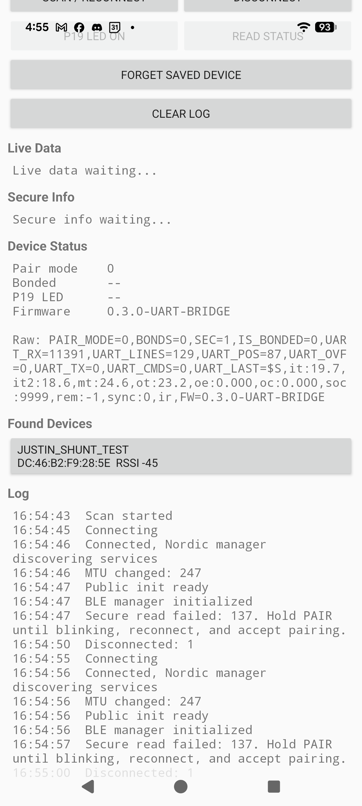
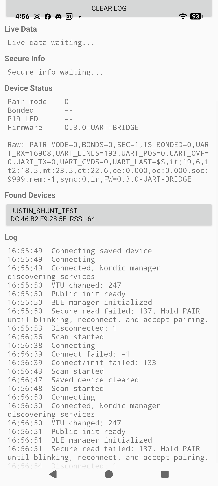

Final verified test used the standalone E73/nRF52840 module. The test board UART low level was observed around 1.x V after connecting STM32, so the remaining test-board issue is treated as hardware/reference-ground related.
0.3.0-UART-BRIDGEJustin_Shunt_TestP0.06 UART TX to STM32 PA3 / USART2_RXP0.08 UART RX from STM32 PA2 / USART2_TX12345678-1234-5678-1234-56789abcdef0...def1...def2, encrypted write...def3...def4, encrypted read...def5...def6def3 status includes UART_RX, UART_LINES, UART_POS, UART_OVF, UART_TX, UART_CMDS, and UART_LAST.
The standalone module showed realistic STM32 serial data:
UART_RX=11391, UART_LINES=129, UART_POS=87UART_RX=16908, UART_LINES=193, UART_POS=0UART_LAST contained STM32 $S,... data with temperature and SOC fields.

Use nRF ground as the oscilloscope reference and verify the test-board STM32 PA2 -> nRF P0.08 low level. The standalone module result confirms the firmware UART direction and receive path are correct.